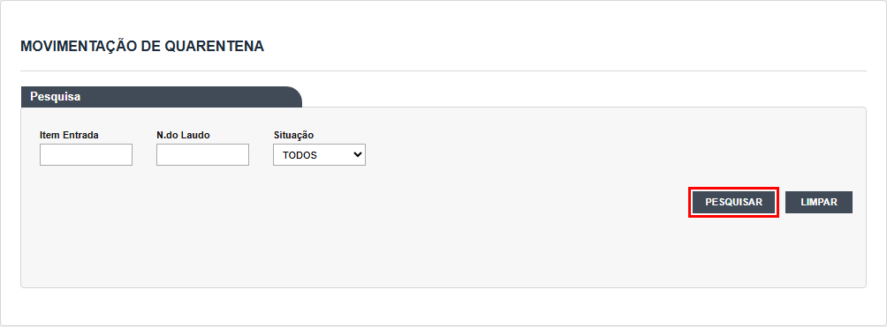
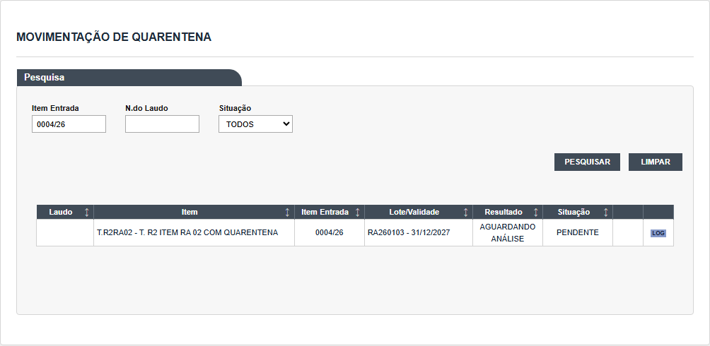
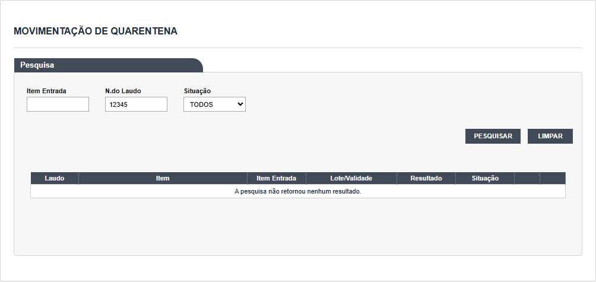
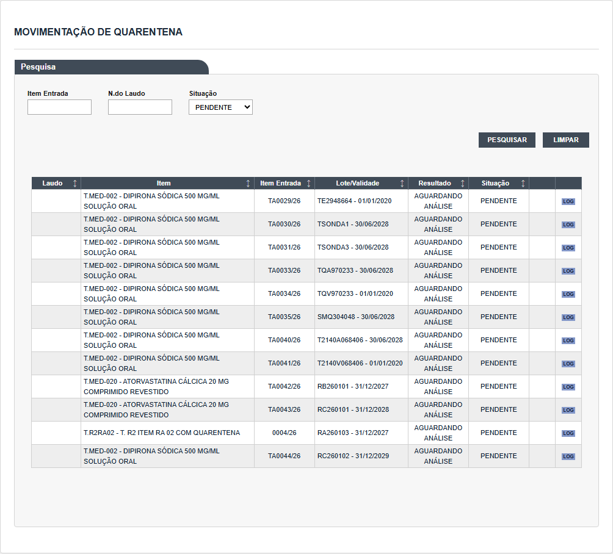
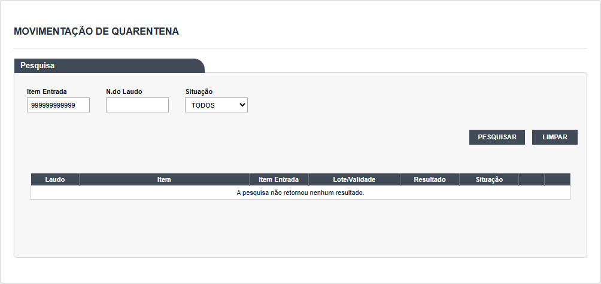
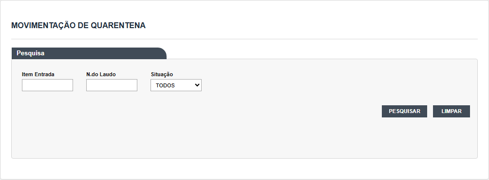
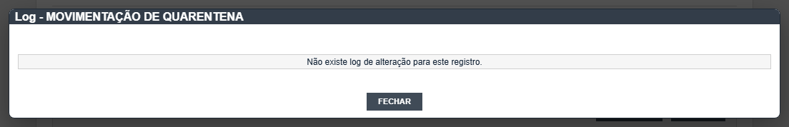

Menu: Estoque > Estoque (o título da tela é "MOVIMENTAÇÃO DE QUARENTENA") · Situação do manual: Em ajuste (testado parcialmente em 19/11/2026 com 9 prints: filtros, lista, mensagens de "sem resultado" e LOG; o formulário de movimentação, o endereçamento, o Finalizar, o lote reprovado, o saldo depois estão Bloqueados no teste, com o motivo em "Prints que faltam") · Situação da tela: funciona com falhas na parte testada, e o ciclo da quarentena não pôde ser percorrido (nenhuma análise chega ao resultado: DV-EST-N-121, Alta; a lista não tem IMPRIMIR nem Excel: DV-EST-N-120, Média) · Fonte dos prints: versão nova.
Como ler este manual: o que está escrito como visto na tela foi testado em 19/11/2026, com o administrador. O que o teste não alcançou vem marcado "Bloqueado no teste" ou "não foi possível" e está em "Prints que faltam". O que ainda é leitura do código diz "pelo código" (front da versão nova, foto de 17/11/2026). O que vem do manual do legado e não foi visto aqui diz "(do legado; a confirmar na versão nova)". Dados de teste: item T.R2RA02 (controle de lote, validade, quarentena e análise físico-química), local de quarentena RQ1, lote RA260103 (50,000, Item de Entrada 0004/26, na lista o lote aparece com o número do sistema e não com o código RA) e as 11 análises de outros testes (itens T.MED-002 e T.MED-020).
Para que serve
A tela em que o lote sai da quarentena depois do laudo do Controle da Qualidade. A lista (filtros Item Entrada, N.do Laudo e Situação: TODOS, PENDENTE, MOVIMENTADO) mostra as análises, inclusive as que ainda aguardam análise; o ícone Movimentar ou visualizar abre a movimentação (dados do lote e do laudo, quantidades e quadro de endereçamento com CONFIRMAR ENDEREÇO, cancelar a linha e FINALIZAR; pelo código). Lote aprovado vai para endereço comum; lote reprovado só para refugo (do legado; a confirmar). É a liberação do material para uso depois da quarentena (RDC 658/2022). Neste teste só a lista foi percorrida: nenhuma análise tinha resultado, então o ícone Movimentar nunca apareceu.
Como era no legado (do legado; a confirmar na versão nova):
A Movimentação de Quarentena é a tela em que o lote sai da quarentena depois do laudo. Para um lote com análise aprovada, o usuário escolhe de qual endereço de quarentena sai o material, quanto leva e para qual endereço comum vai; para um lote reprovado, o destino só pode ser um local de refugo. Ao finalizar, a tela grava a saída da origem e a entrada no destino, marca a análise como movimentada e registra o log da liberação (movimentacao_cq_ed2.aspx.cs:186-297). É a liberação para uso após a quarentena (RDC 658/2022, art. 157 e art. 189).
Antes de começar (o que precisa existir)
| O que precisa existir | Para quê | Onde se cadastra |
|---|---|---|
| Usuário administrador (perfil 1) | Só ele abre o Estoque (DV-EST-N-001) | Principal > Administração |
| Lote em quarentena com análise do CQ com resultado (Aprovado ou Reprovado) | Sem laudo a tela não oferece a movimentação | Entrada de Material - Outras (rota direta, tela 41) com um item de controle de quarentena e, no Controle da Qualidade, o resultado. No teste, não se chegou ao resultado (DV-EST-N-121) |
| Local de quarentena com endereços | O item com quarentena só oferece locais de quarentena na entrada (a lista de Local ficou vazia até criar o RQ1) |
Cadastros > Local de Armazenagem (Local de Quarentena = Sim) e Endereço do Estoque (tela 22) |
| Endereço de destino livre e compatível (comum para aprovado; refugo para reprovado) | O material precisa ir para algum endereço | Estoque > Endereço do Estoque (tela 22); local de refugo RR1 criado, não usado |
| Almoxarifado do grupo do usuário | Limita as análises vistas | Cadastros > Grupo de Usuário - Almoxarifado |
Segundo o manual do legado (do legado; a confirmar na versão nova): a análise precisa estar finalizada com resultado; o lote precisa ter saldo em endereço de quarentena; o destino precisa existir no almoxarifado do lote, com rua, coluna e andar; e não pode haver solicitação de amostra pendente (movimentacao_cq_ed2.aspx.cs:212-213).
Passo a passo
- Abrir a tela. No menu Estoque, clique em Movimentação de Quarentena. O título é "MOVIMENTAÇÃO DE QUARENTENA" e o quadro Pesquisa traz Item Entrada, N.do Laudo e Situação (TODOS, PENDENTE, MOVIMENTADO), com os botões PESQUISAR e LIMPAR. A lista fica vazia antes de pesquisar e não há Incluir (a análise nasce em outra tela).

- Pesquisar. Clique em PESQUISAR. A lista traz Laudo, Item (código e descrição), Item Entrada, Lote/Validade, Resultado e Situação, mais o ícone LOG (título "Ver Log Alteração"). No teste vieram 12 análises, todas AGUARDANDO ANÁLISE e PENDENTE. A coluna Laudo vem vazia em todas as linhas. Não há IMPRIMIR nem Exportar para Excel (DV-EST-N-120) e o ícone Movimentar não aparece (ele só aparece com resultado Aprovado ou Reprovado).
- Filtrar por Item Entrada. Digite o número do sistema do lote (por exemplo
0004/26) ou o códigoTA0043e clique em PESQUISAR: aparece só a linha do lote. O campo aceita até 12 caracteres.

- Filtrar por N.do Laudo e por Situação. Um laudo inexistente (por exemplo
12345) e a Situação MOVIMENTADO dão "A pesquisa não retornou nenhum resultado."; PENDENTE e TODOS trazem as mesmas 12 linhas (nenhuma análise está MOVIMENTADO).


- Pesquisa sem resultado. Um Item Entrada que não existe (por exemplo
999999999999) mostra a faixa "A pesquisa não retornou nenhum resultado." dentro da lista.

- LIMPAR. O botão esvazia os filtros e a lista.

- LOG. O ícone abre a janela "Log - MOVIMENTAÇÃO DE QUARENTENA". Para uma análise ainda não movimentada, a janela diz "Não existe log de alteração para este registro.", com o botão FECHAR. O log com usuário, data, hora e justificativa só existe depois de uma movimentação (não visto: Bloqueado no teste).

- Abrir uma análise com resultado, escolher a origem e o destino, CONFIRMAR ENDEREÇO, cancelar a linha, FINALIZAR e consultar a análise movimentada. Bloqueado no teste: nenhuma análise do ambiente tem resultado, então a lista não oferece o ícone Movimentar e o formulário não abre (não há rota para abri-lo sem o ícone). Pelo código da tela, o formulário traz os quadros Dados da Movimentação (Item, Item de Entrada, Lote, Data de Validade, Fornecedor, Fabricante, Nº do Laudo, Resultado e Unid. Medida) e Quantidades (Lote, Referência, Retenção, Estabilidade, Endereçar e Endereçada), Endereço Origem, os campos do destino (Almoxarifado, Local, Rua, Coluna e Andar), Quantidade, CONFIRMAR ENDEREÇO, o ícone de cancelar o endereçamento, FINALIZAR e VOLTAR; entrada de produção traz um aviso da produção. Nada disso foi visto funcionando.
Passo a passo do legado, para comparar (do legado; a confirmar na versão nova):
- Abra o lote pelo ícone; em Endereço Origem, escolha o endereço de quarentena; digite a quantidade em Endereçar (até o pendente).
- No Destino, escolha Almoxarifado, Local, Rua, Coluna e Andar e confira que o Endereço Destino está completo (por exemplo
L903-R901-C901-A901). Se aparecerR000-C000-A000, não finalize. - CONFIRMAR ENDEREÇO (a linha entra na grade; repita até a soma fechar), FINALIZAR e SIM em "Deseja finalizar a movimentação?"; aparece "Movimentação finalizada!". Confira na Disponibilidade do Lote: o aprovado saiu de Quarentena e entrou em Disponível; o reprovado passa a Reprovado.
Ícones e botões da lista
| Ícone ou botão | O que faz | Quando aparece |
|---|---|---|
| PESQUISAR / LIMPAR | Filtra / esvazia filtros e lista | Sempre |
| LOG ("Ver Log Alteração") | Abre o log; para análise não movimentada diz que não existe | Em cada linha (visto) |
| Movimentar ou visualizar | Abre a análise para movimentar (PENDENTE) ou ver (MOVIMENTADO) | Não apareceu (só com resultado Aprovado ou Reprovado) |
| IMPRIMIR / Exportar para Excel | Relatório e arquivo da lista | Não aparecem (DV-EST-N-120); o legado os mostrava depois de pesquisar com resultado |
| CONFIRMAR ENDEREÇO, Cancelar endereçamento, FINALIZAR, VOLTAR | Pelo código, no formulário | Formulário não aberto (Bloqueado no teste) |
Segundo o manual do legado (do legado; a confirmar na versão nova): Movimentar / Visualizar (análise Aprovada ou Reprovada; "Visualizar" depois de movimentada); Ver Log (marca Consultar log); Cancelar linha (apaga a linha endereçada; a origem volta a ter pendente); Imprimir / Excel (depois de uma pesquisa com resultado).
Botões e ações
Vistos: PESQUISAR, LIMPAR e LOG (lista). Não aparecem: IMPRIMIR, Exportar para Excel e Movimentar ou visualizar. Pelo código, no formulário (Bloqueado no teste): CONFIRMAR ENDEREÇO, Cancelar endereçamento, FINALIZAR, VOLTAR, SIM, NÃO e OK.
Botões do legado (do legado; a confirmar na versão nova):
| Botão ou ação | Quando aparece | O que faz | Para onde leva o lote | Fonte |
|---|---|---|---|---|
| Pesquisar e Limpar (lista) | Sempre | Lista as análises do filtro; esvazia | Não muda | movimentacao_cq_lst.aspx.cs:31-59 |
| Imprimir e Excel (lista) | Depois de uma pesquisa com resultado | Relatório e planilha | Não muda | movimentacao_cq_lst.aspx.cs:78-79 e 285-314 |
| Movimentar / Visualizar (ícone) | Análise Aprovada ou Reprovada (o ícone vira "Visualizar" depois de movimentada) | Abre o formulário | Não muda | movimentacao_cq_lst.aspx.cs:160-181 |
| Ver Log | Para quem tem a marca Consultar log | Abre o histórico da liberação (objeto LIBERACAO_CQ) | Não muda | movimentacao_cq_lst.aspx.cs:137-147 e 185-186 |
| CONFIRMAR ENDEREÇO | Análise ainda não movimentada | Confere quantidade, pendente e endereço e grava a linha | Linha gravada na hora; saldo ainda não muda | movimentacao_cq_ed2.aspx.cs:345-412 |
| Cancelar linha (ícone da grade) | Análise ainda não movimentada | Apaga a linha endereçada ("Endereço não encontrado!" se não existe) | A origem volta a ter pendente | movimentacao_cq_ed2.aspx.cs:696-776 |
| FINALIZAR | Análise ainda não movimentada | Pergunta, confere o total, grava a movimentação, marca a análise como movimentada e grava o log | Disponível (aprovado) ou Reprovado/refugo (reprovado) | movimentacao_cq_ed2.aspx.cs:186-297 |
| VOLTAR | Sempre | Volta à lista sem gravar | Não muda; as linhas já confirmadas ficam gravadas | movimentacao_cq_ed2.aspx.cs:181-184 |
Mensagens do sistema
Vistas na tela: "A pesquisa não retornou nenhum resultado." · "Não existe log de alteração para este registro."
Pelo código da tela, não vistas: "Deseja finalizar a movimentação?" · "Deseja cancelar o endereçamento?" · "Movimentação finalizada!" · "Nenhum endereço foi encontrado" · "Almoxarifado não informado!" · "Análise não encontrada!" · "Endereço de origem não informado!" · "Quantidade não informada!" · "Quantidade não informada ou inválida!" · "Quantidade informada é superior a pendente!" · "Endereço inválido!" · "Não foi possível carregar as permissões da tela. Atualize a página." · "Não foi possível pesquisar as movimentações." · "Não foi possível carregar os endereços de origem." · "Não foi possível carregar os endereços de destino." · "Não foi possível registrar o endereçamento." · "Não foi possível cancelar o endereçamento." · "Não foi possível finalizar a movimentação." · "Não foi possível carregar o log de alteração." · "Não foi possível gerar o relatório."
Mensagens do legado (do legado; a confirmar na versão nova):
Nem todas foram vistas numa tela. As marcadas "vista em teste" aparecem nos resultados das rodadas.
| Mensagem (texto exato do código) | Quando aparece | Fonte |
|---|---|---|
| A pesquisa não retornou nenhum resultado. | Lista vazia | movimentacao_cq_lst.aspx.cs:101 |
| Análise não econtrada! / Analise não encontrada! | Análise que não existe | movimentacao_cq_ed2.aspx.cs:64 e 216 |
| LOTE DE PRODUÇÃO AGUARDANDO LIBERAÇÃO DA GARANTIA / RESPONSÁVEL TÉCNICO / LOTE DE PRODUÇÃO REPROVADO | Lote vindo da produção que ainda não foi liberado (a tela esconde origem, destino e Finalizar) | movimentacao_cq_ed2.aspx.cs:79-93 |
| Quantidade não informada! / Quantidade não informada ou inválida! | Quantidade vazia ou zero | movimentacao_cq_ed2.aspx:198; movimentacao_cq_ed2.aspx.cs:354 |
| Quantidade informada é superior a pendente! | Quantidade maior que o saldo do endereço (vista em teste, CT-EST-054, 22/10/2026) | movimentacao_cq_ed2.aspx.cs:357 |
| Endereço não pode receber o lote! / Endereço de destino inválido! | Destino que não aceita o lote ou que não existe | movimentacao_cq_ed2.aspx.cs:362 e 367 |
| Almoxarifado não informado! / Local não Informado! / Rua não informada! / Coluna não informada! / Andar não informado! / Endereço inválido! | Avisos de campo do formulário | movimentacao_cq_ed2.aspx:224-283 |
| Deseja finalizar a movimentação? / Movimentação finalizada! | Finalizar (vista em teste, CT-EST-207 e outros) | movimentacao_cq_ed2.aspx.cs:298 e 814-830 |
| A Análise ainda não foi finalizada! / O processo de liberação já foi executado! / Existem solicitações de amostra pendentes! | Finalizar fora de ordem | movimentacao_cq_ed2.aspx.cs:206, 209 e 213 |
| Nenhum endereço foi registrado! | Finalizar sem nenhuma linha | movimentacao_cq_ed2.aspx.cs:222 |
| Total endereçado é divergente do total do Lote! | A soma endereçada não fecha com o saldo a liberar (vista em teste, rodada 10) | movimentacao_cq_ed2.aspx.cs:237 |
| Algum endereço de Origem foi movimentado! Exclua os endereços atuais | O saldo da origem mudou depois de confirmar o endereço | movimentacao_cq_ed2.aspx.cs:240 |
| O Endereço {código} não pode ser utilizado! | Destino que deixou de poder receber o lote | movimentacao_cq_ed2.aspx.cs:248 |
| Endereço não encontrado! | Cancelar uma linha que não existe | movimentacao_cq_ed2.aspx.cs:746 |
| Nenhum endereço foi encontrado | Grade de endereços vazia (vista em teste, rodadas 6 e 10) | movimentacao_cq_ed2.aspx.cs:686 |